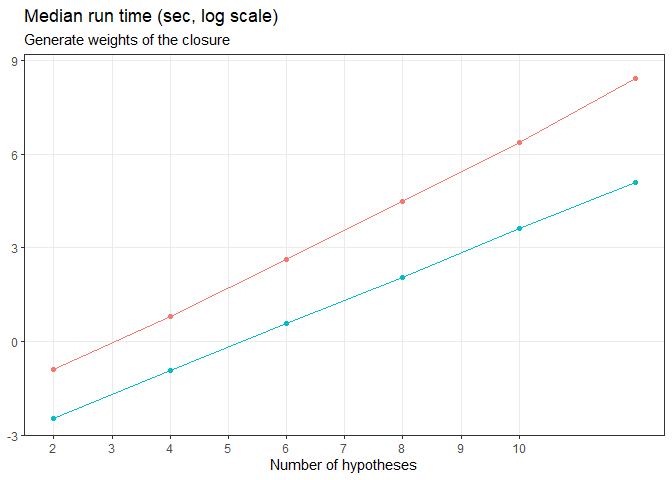
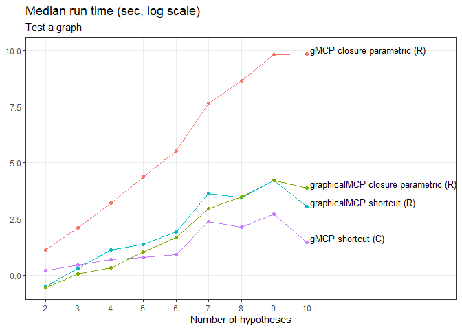
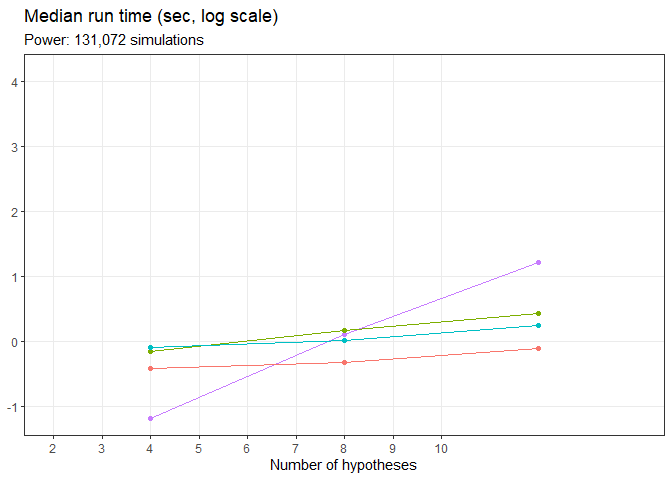
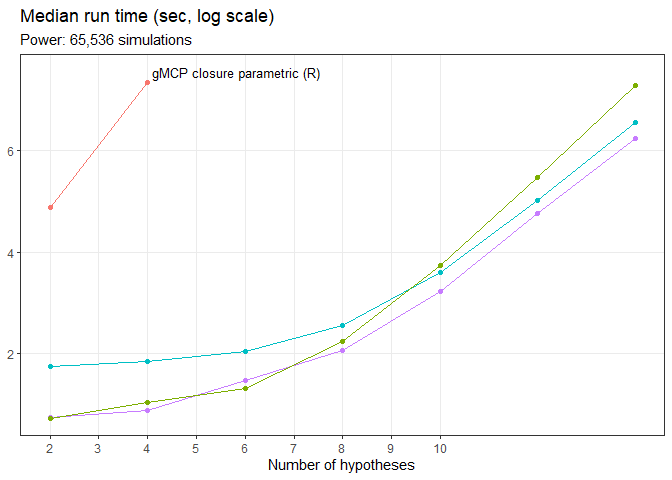
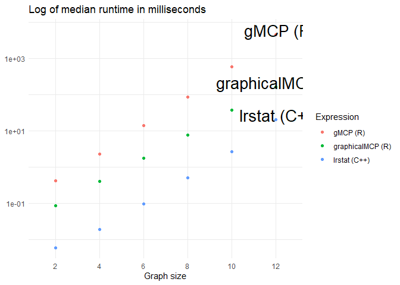
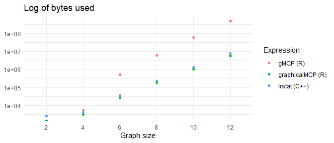

library(graphicalMCP)
library(lrstat)
library(gMCP)
##>
##> Attaching package: 'gMCP'
##> The following object is masked from 'package:graphicalMCP':
##>
##> fallback
library(gt)
library(here)
##> here() starts at /home/runner/work/graphicalMCP/graphicalMCP
library(bench)
library(dplyr)
##>
##> Attaching package: 'dplyr'
##> The following objects are masked from 'package:stats':
##>
##> filter, lag
##> The following objects are masked from 'package:base':
##>
##> intersect, setdiff, setequal, union
library(tidyr)
library(tictoc)
library(ggplot2)
library(forcats)
plot_benchmarks <- function(df_benchmarks,
subtitle,
x_max = 14,
y_breaks = 10^(0:4),
scale = FALSE) {
ggplot(
df_benchmarks,
aes(
size,
if (scale) log(median * 1e5 / sims) else log(median),
colour = fct_reorder2(char_expression, size, median),
group = char_expression
)
) +
geom_line() +
geom_point() +
geom_text(
data = . %>%
group_by(char_expression) %>%
drop_na(median) %>%
filter(size == max(size)),
aes(label = char_expression),
nudge_x = .1,
nudge_y = .2,
color = "black",
size = 3.5,
hjust = 0,
check_overlap = TRUE
) +
scale_x_continuous(breaks = 2:10, limits = c(2, x_max)) +
# scale_y_log10(
# breaks = y_breaks,
# labels =
# function(breaks) format(breaks, scientific = FALSE, big.mark = ",")
# ) +
labs(
title = "Median run time (sec, log scale)",
subtitle = subtitle,
x = "Number of hypotheses",
y = NULL
) +
theme(legend.position = "none", panel.grid.minor = element_blank())
}
table_benchmarks <- function(df, title, unit) {
df %>%
select(char_expression, size, median) %>%
pivot_wider(names_from = size, values_from = median) %>%
gt() %>%
tab_header(title) %>%
fmt_number(
pattern = paste0("{x}", unit),
seq_along(unique(df$size)) + 1
) %>%
tab_spanner("Number of hypotheses", seq_along(unique(df$size)) + 1) %>%
cols_label(char_expression = "Algorithm") %>%
tab_options(table.font.size = 12)
}Introduction
An emphasis of the graphicalMCP package is performance, and one place
where improved performance was especially needed was the function to
generate weights of all sub-graphs for an MCP graph -
gMCP::generateWeights() or
graphicalMCP::graph_generate_weights(). We attempted to
create this function using three main strategies, and compared their
speed and memory performance with each other, as well as with the gMCP
implementation.
Methodology
The sub-graphs of a graph can be thought of as a tree structure, where each vertex is a sub-graph. The root of the tree is the initial graph, and each successive level of the tree is created by deleting each single node from the graphs in the level above.
Each-from-initial - gw_original()
The first and simplest method of generating sub-graph weights builds
on the exported graph_update() function, which takes a
graph and logical vector (h-vector) as arguments and deletes all the
hypotheses from the graph corresponding to the FALSE
entries in the h-vector. In this case, the whole closure of a graph is
generated as 2^n - 1 h-vectors. This can be done
efficiently with expand.grid(rep(list(1:0), n))[-2^n, ],
where n is the number of hypotheses in the graph. Then the
initial graph is passed to graph_update() along with each
h-vector to determine the weights for each sub-graph.
This method is very straightforward, and the steps are clear.
However, it is not efficient because each element of the closure starts
with the full graph before deleting appropriate hypotheses. This means
that for a graph of size 5, hypothesis e.g. 3 gets deleted
to get to the 1-2-4-5 graph, and then again to get to the
2-4-5 graph, and so on.
Parent-child recursive -
graph_generate_weights_recursive()
Because of the tree structure of the closure of a graph, recursion is a logical candidate for traversing it. In the recursive method, the initial graph is the starting point still. Each hypothesis is deleted from the initial graph, and the recursion is called on each of these smaller graphs as a new starting point. This means that to get to a sub-graph of size 2, it won’t start at size 5 and delete 3 hypotheses; it will start at size 3 and delete a single hypothesis. For each level of the recursion, the starting graph & all sub-graphs are returned in a list where each element is a graph. If the graph is an endpoint of the recursion, just the graph is returned.
One of the keys to this method is that, whenever a hypothesis is deleted and the resulting graph passed down the recursion, the corresponding elements of the hypothesis and transition weights are fully removed from the graph structure. This means that previously deleted rows are not unnecessarily included in loops further down into the recursion.
Furthermore, the recursive algorithm has a way to remember what the last hypothesis removed was, and it only creates children by deleting hypotheses larger than the last-deleted node. This avoids the situation of creating level 3+ graphs multiple times by deleting the same nodes but in a different order.
This method is quite fast, but still not the fastest. It is the most memory-efficient.
Parent-child formula - graph_generate_weights()
Using the recursive method created significant gains in speed and memory efficiency, but one other way is even faster. The recursive method generates a list of all sub-graphs, where each graph occurs after its parent. This means that if there’s a formulaic way to find a graph’s parent given the graph’s location in the list, the parent-child location relationship could be calculated rather than generated with recursion.
For the graph ordering generated by
rev(expand.grid(rep(list(1:0), n))[-2^n, ]), this formula
is straightforward. This ordering generates h-vectors that can be
thought of as binary numbers counting down from 2^n to
1. This means that the bottom half of the h-vectors are
identical to the top half, except that the first entry is a 0 instead of
a 1. Thus, the parents of the bottom half, elements
2^n / 2 -> 1, are the elements
2^n -> 2^n / 2 + 1. And the node to delete to move from
an element in the top half to an element in the bottom half is the
first. This same logic then applies to the top half and the bottom half
individually, ignoring element 1. Each time the set of h-vectors is
divided in half, it yields the h-vectors for a graph of size
n - 1 in each half.
Without generating the h-vectors at all, the parent index and
node-to-delete index can be calculated directly. The parent index vector
is sequential blocks of 1:(2^k) sequences, and the
node-to-delete vector is sequential blocks of n - k
repeated k + 1 times, with
0 <= k <= n - 1. Both vectors have the last element
removed, which corresponds to creating the empty sub-graph.
Proof idea
Let g be a valid MCP graph with n
hypotheses. We proceed by induction on n.
Intuition and base cases
Let n = 1. Then the closure of g is simply
the trivial sub-graph, g. The parent and delete vectors are
empty.
Let n = 2. Then the closure of g is
(1, 1), (1, 0), (0, 1). The parent vector is
(1, 1), and the delete vector is (2, 1).
Let n = 3. Then the closure of g is
(1, 1, 1), (1, 1, 0), (1, 0, 1), (1, 0, 0), (0, 1, 1), (0, 1, 0), (0, 0, 1).
The parent vector is (1, 1, 2, 1, 2, 3), and the delete
vector is (3, 2, 2, 1, 1, 1).
Inductive step
Suppose these formulas hold for a graph of size n - 1.
Then the closure is 2^(n - 1) -> 1 in binary, the parent
vector is sequential 1:2^k sequences, and the delete vector
is sequential blocks of n - 1 - k repeated
k + 1 times, with 0 <= k <= n - 2. Add a
hypothesis to get to a graph of size n. Then the new
closure is the n - 1 closure repeated twice, with a 1
before the first repeat, and a 0 before the second. Thus the difference
between a row in the top half and corresponding row in the bottom half
is 2^(n - 1). And the only difference in elements between
such rows is the first element has switched from 1 to 0. Thus, the
parent index of a row in the bottom half is the corresponding row in the
top half, and the node to delete is the first.
\(\blacksquare\)
Performance
We analyzed performance of the various methods using the bench package.
set.seed(7523)
sizes <- seq(2, 12, by = 2)
keep_cols <-
c(
"min",
"median",
"itr/sec",
"mem_alloc",
"gc/sec",
"n_itr",
"n_gc",
"total_time",
"size",
"char_expression"
)
if (file.exists(here("vignettes/data/df_benchmarks_gw.rds"))) {
df_benchmarks_gw <-
readRDS(here("vignettes/data/df_benchmarks_gw.rds"))
} else {
list_benchmarks_gw <- lapply(
sizes,
function(size) {
rando <- random_graph(size)
trn <- rando$transitions
hyp <- rando$hypotheses
# lrstat::fwgtmat() errors out due to weights not summing to 1, sometimes
# even when they seem to sum to 1 exactly. This loop tests whether
# fwgtmat() will run successfully, and updates weights if not
i <- 0
res_is_error <- TRUE
while (res_is_error) {
if (i > 0) {
hyp[seq_len(size - i)] <- round(hyp[seq_len(size - i)], 6)
hyp[(size - i + 1):size] <- (1 - sum(hyp[seq_len(size - i)])) / i
}
res <- try(fwgtmat(hyp, trn), silent = TRUE)
res_is_error <- inherits(res, "try-error")
i <- i + 1
}
speed_comp <- mark(
`gMCP (R)` = generateWeights(trn, hyp),
`graphicalMCP (R)` = graph_generate_weights(rando),
`lrstat (C++)` = fwgtmat(hyp, trn),
check = FALSE,
min_iterations = 1,
time_unit = "ms"
)
speed_comp$size <- size
speed_comp$mem_alloc <- as.integer(speed_comp$mem_alloc)
speed_comp$char_expression <- as.character(speed_comp$expression)
speed_comp
}
)
df_benchmarks_gw <- do.call(rbind, list_benchmarks_gw)[keep_cols]
saveRDS(
df_benchmarks_gw,
here("vignettes/data/df_benchmarks_gw.rds")
)
}
df_benchmarks_gw %>%
filter(char_expression != "lrstat (C++)") %>%
plot_benchmarks("Generate weights of the closure", 12, 10^(-2:4))
df_benchmarks_gw %>%
filter(char_expression != "lrstat (C++)") %>%
select(char_expression, size, median) %>%
pivot_wider(names_from = size, values_from = median) %>%
gt() %>%
tab_header("Generate weights of the closure") %>%
fmt_number(pattern = "{x}ms", 2:7) %>%
tab_spanner("Number of hypotheses", 2:7) %>%
cols_label(char_expression = "Package") %>%
tab_options(table.font.size = 24)| Generate weights of the closure | ||||||
| Package | Number of hypotheses | |||||
|---|---|---|---|---|---|---|
| 2 | 4 | 6 | 8 | 10 | 12 | |
| gMCP (R) | 0.41ms | 2.24ms | 13.90ms | 86.84ms | 575.72ms | 4,542.30ms |
| graphicalMCP (R) | 0.09ms | 0.40ms | 1.77ms | 7.73ms | 37.46ms | 161.44ms |
set.seed(7523)
sizes <- seq(2, 12, by = 2)
if (file.exists(here("vignettes/data/df_benchmarks_seqtest.rds"))) {
df_benchmarks_seqtest <-
readRDS(here("vignettes/data/df_benchmarks_seqtest.rds"))[keep_cols]
} else {
list_benchmarks_seqtest <- lapply(
sizes,
function(size) {
rando <- random_graph(size)
trn <- rando$transitions
hyp <- rando$hypotheses
p <- as.numeric(
pnorm(mvtnorm::rmvnorm(1, runif(size, 1.5, 3)), lower.tail = FALSE)
)
# lrstat::fwgtmat() errors out due to weights not summing to 1, sometimes
# even when they seem to sum to 1 exactly. This loop tests whether
# fwgtmat() will run successfully, and updates weights if not
if (size != 2) {
i <- 0
res_is_error <- TRUE
while (res_is_error) {
if (i > 0) {
hyp[seq_len(size - i)] <- round(hyp[seq_len(size - i)], 6)
hyp[(size - i + 1):size] <- (1 - sum(hyp[seq_len(size - i)])) / i
}
res <- try(fwgtmat(hyp, trn), silent = TRUE)
res_is_error <- inherits(res, "try-error")
i <- i + 1
}
}
speed_comp <- mark(
`gMCP shortcut (C)` =
gMCP(as_gmcp_graph(rando), p, alpha = .025)@rejected,
`graphicalMCP shortcut (R)` = graph_test_shortcut(rando, p),
`lrstat Bonferroni (C++)` = fadjpbon(hyp, trn, p) <= .025,
`gMCP closure parametric (R)` =
gMCP(as_gmcp_graph(rando), p, alpha = .025, corr = diag(size)),
`graphicalMCP closure parametric (R)` =
graph_test_closure(rando, p, corr = diag(size)),
`lrstat Simes (C++)` =
fadjpsim(fwgtmat(hyp, trn), p, matrix(1, ncol = size)) <= .025,
`graphicalMCP closure Simes (R)` =
graph_test_closure(rando, p, test_types = "s"),
check = FALSE,
min_iterations = 5,
time_unit = "ms"
)
speed_comp$size <- size
speed_comp$mem_alloc <- as.integer(speed_comp$mem_alloc)
speed_comp$char_expression <- as.character(speed_comp$expression)
speed_comp
}
)
df_benchmarks_seqtest <- do.call(rbind, list_benchmarks_seqtest)[keep_cols]
saveRDS(
df_benchmarks_seqtest,
here("vignettes/data/df_benchmarks_seqtest.rds")
)
}
df_benchmarks_seqtest %>%
filter(
!char_expression %in% c(
"lrstat Bonferroni (C++)",
"lrstat Simes (C++)",
"graphicalMCP closure Simes (R)"
)
) %>%
plot_benchmarks("Test a graph")
set.seed(7523)
sizes <- seq(4, 20, by = 4)
sims <- 2^17
if (file.exists(here("vignettes/data/df_benchmarks_power_shortcut.rds"))) {
df_benchmarks_power_shortcut <- readRDS(
here("vignettes/data/df_benchmarks_power_shortcut.rds")
)[keep_cols] %>%
filter(!(char_expression == "gMCP closure parametric (R)" & size > 5))
} else {
cat("", file = here::here("vignettes/log/pwr_short.log"), append = FALSE)
list_benchmarks_power_shortcut <- lapply(
sizes,
function(size) {
cat(
size, "|", format(Sys.time()), "\n",
file = here::here("vignettes/log/pwr_short.log"),
append = TRUE
)
rando <- random_graph(size)
trn <- rando$transitions
hyp <- rando$hypotheses
marg_pow <- rep(.95, size)
ncp <- qnorm(1 - .025) - qnorm(1 - marg_pow)
t_corr <- s_corr <- diag(size)
speed_comp <- mark(
`gMCP shortcut (C)` =
calcPower(hyp, .025, trn, ncp, s_corr, n.sim = sims),
`graphicalMCP shortcut, high power (R)` =
graph_calculate_power(rando,
sim_n = sims, marginal_power = marg_pow,
sim_corr = s_corr
),
`graphicalMCP shortcut, mid power (R)` =
graph_calculate_power(rando,
sim_n = sims, marginal_power = marg_pow / 2,
sim_corr = s_corr
),
`graphicalMCP shortcut, low power (R)` =
graph_calculate_power(rando,
sim_n = sims, marginal_power = marg_pow / 20,
sim_corr = s_corr
),
check = FALSE,
min_iterations = 3,
time_unit = "s",
memory = FALSE
)
speed_comp$size <- size
speed_comp$mem_alloc <- as.integer(speed_comp$mem_alloc)
speed_comp$char_expression <- as.character(speed_comp$expression)
speed_comp
}
)
cat(
format(Sys.time()), "\n",
file = here::here("vignettes/log/pwr_short.log"),
append = TRUE
)
df_benchmarks_power_shortcut <-
do.call(rbind, list_benchmarks_power_shortcut)[keep_cols]
saveRDS(
df_benchmarks_power_shortcut,
here("vignettes/data/df_benchmarks_power_shortcut.rds")
)
}
df_benchmarks_power_shortcut %>%
# filter(char_expression != "graphicalMCP closure Simes (R)") %>%
plot_benchmarks("Power: 131,072 simulations", scale = TRUE)
df_benchmarks_power_shortcut %>%
table_benchmarks("Power: 131,072 simulations", "s")| Power: 131,072 simulations | |||||
| Algorithm | Number of hypotheses | ||||
|---|---|---|---|---|---|
| 4 | 8 | 12 | 16 | 20 | |
| gMCP shortcut (C) | 0.40s | 1.45s | 4.41s | 9.91s | 18.70s |
| graphicalMCP shortcut, high power (R) | 1.11s | 1.55s | 2.01s | 5.79s | 67.68s |
| graphicalMCP shortcut, mid power (R) | 1.19s | 1.33s | 1.68s | 4.82s | 65.80s |
| graphicalMCP shortcut, low power (R) | 0.87s | 0.95s | 1.18s | 4.40s | 68.08s |
set.seed(7523)
sizes <- seq(2, 14, by = 2)
sims <- 2^16
if (file.exists(here("vignettes/data/df_benchmarks_power_closure.rds"))) {
df_benchmarks_power_closure <- readRDS(
here("vignettes/data/df_benchmarks_power_closure.rds")
)[keep_cols] %>%
filter(!(char_expression == "gMCP closure parametric (R)" & size > 5))
} else {
cat("", file = here::here("vignettes/log/pwr_clos.log"), append = FALSE)
list_benchmarks_power_closure <- lapply(
sizes,
function(size) {
cat(
size, "|", format(Sys.time()), "\n",
file = here::here("vignettes/log/pwr_clos.log"),
append = TRUE
)
rando <- random_graph(size)
trn <- rando$transitions
hyp <- rando$hypotheses
marg_pow <- rep(.8, size)
ncp <- qnorm(1 - .025) - qnorm(1 - marg_pow)
t_corr <- s_corr <- diag(size)
speed_comp <- mark(
`gMCP closure parametric (R)` =
if (size < 6) {
calcPower(
hyp, .025, trn,
marg_pow, s_corr, t_corr, sims
)
},
`graphicalMCP closure Bonferroni (R)` =
graph_calculate_power(rando,
sim_n = sims, marginal_power = marg_pow,
sim_corr = s_corr,
force_closure = TRUE
),
`graphicalMCP closure parametric (R)` =
graph_calculate_power(rando,
sim_n = sims, marginal_power = marg_pow,
sim_corr = s_corr, test_types = "parametric",
test_corr = list(t_corr)
),
`graphicalMCP closure Simes (R)` =
graph_calculate_power(rando,
sim_n = sims, marginal_power = marg_pow,
sim_corr = s_corr, test_types = "simes"
),
check = FALSE,
min_iterations = 1,
time_unit = "s"
)
speed_comp$size <- size
speed_comp$mem_alloc <- as.integer(speed_comp$mem_alloc)
speed_comp$char_expression <- as.character(speed_comp$expression)
speed_comp
}
)
cat(
format(Sys.time()), "\n",
file = here::here("vignettes/log/pwr_clos.log"),
append = TRUE
)
df_benchmarks_power_closure <-
do.call(rbind, list_benchmarks_power_closure)[keep_cols] %>%
filter(!(char_expression == "gMCP closure parametric (R)" & size > 5))
saveRDS(
df_benchmarks_power_closure,
here("vignettes/data/df_benchmarks_power_closure.rds")
)
}
df_benchmarks_power_closure %>%
# filter(char_expression != "graphicalMCP closure Simes (R)") %>%
plot_benchmarks("Power: 65,536 simulations", scale = TRUE)
df_benchmarks_power_closure %>%
table_benchmarks("Power: 65,536 simulations", "s")| Power: 65,536 simulations | |||||||
| Algorithm | Number of hypotheses | ||||||
|---|---|---|---|---|---|---|---|
| 2 | 4 | 6 | 8 | 10 | 12 | 14 | |
| gMCP closure parametric (R) | 85.90s | 1,008.81s | NA | NA | NA | NA | NA |
| graphicalMCP closure Bonferroni (R) | 1.38s | 1.60s | 2.86s | 5.15s | 16.34s | 75.76s | 334.83s |
| graphicalMCP closure parametric (R) | 1.36s | 1.86s | 2.42s | 6.15s | 27.65s | 155.12s | 956.28s |
| graphicalMCP closure Simes (R) | 3.76s | 4.13s | 5.06s | 8.47s | 24.09s | 99.43s | 461.30s |
All methods increase in time by O(2^n), but the starting
point is lowest for graph_generate_weights().
gg_benchmarks <- ggplot(df_benchmarks_gw) +
scale_y_log10() +
theme_minimal()
gg_benchmarks +
geom_point(
aes(
as.factor(size),
median,
colour = fct_reorder2(char_expression, size, median)
)
) +
geom_text(
data = . %>%
group_by(char_expression) %>%
drop_na() %>%
filter(size == max(size)),
aes(as.factor(size),
median,
label = char_expression
),
nudge_x = .1,
nudge_y = .12,
color = "black",
size = 7
) +
labs(
colour = "Expression",
title = "Log of median runtime in milliseconds",
x = "Graph size",
y = NULL
)
Memory also increases at about O(2^n), but here the
recursive solution shows a slight advantage.
gg_benchmarks +
geom_point(
aes(
as.factor(size),
mem_alloc,
colour = fct_reorder2(char_expression, size, median)
)
) +
labs(
colour = "Expression",
title = "Log of bytes used",
x = "Graph size",
y = NULL
)
##> Warning: Transformation introduced infinite values in continuous y-axis
Performance example
In order to further demonstrate the performance improvement, we will simulate a size 15 graph and generate weights in 2 different ways. Results can be demonstrated to be equivalent, and the time difference will be shown as well. We can see that the performance improvement is significant, especially for larger graphs.
check_methods <- xfun::cache_rds(
{
set.seed(1515)
m <- 15
w <- sample(1:m, replace = TRUE)
w <- w / sum(w)
g <- replicate(m, sample(1:m, replace = TRUE), simplify = TRUE)
diag(g) <- 0
g <- g / rowSums(g)
graph <- new("graphMCP", m = g, weights = w)
graph2 <- graph_create(w, g)
tic("gMCP::generateWeights()")
gmcp_weights <- generateWeights(graph)
tictoc_gmcp <- toc(quiet = TRUE)$callback_msg
tic("graphicalMCP::graph_generate_weights()")
graphicalmcp_weights <- graph_generate_weights(graph2)
tictoc_graphicalmcp <- toc(quiet = TRUE)$callback_msg
# Order of results is reversed between packages, and column names differ,
# but values are the same
res_equal <- all.equal(
unname(gmcp_weights[rev(seq_len(nrow(gmcp_weights))), ]),
unname(graphicalmcp_weights)
)
list(tictoc_gmcp, tictoc_graphicalmcp, res_equal)
},
clean = FALSE
)
cat(check_methods[[1]], "\n")
##> gMCP::generateWeights(): 34.073 sec elapsed
cat(check_methods[[2]], "\n")
##> graphicalMCP::graph_generate_weights(): 1.34 sec elapsed
cat(
"Results from the two packages are equal (up to ordering & names):",
check_methods[[3]],
"\n"
)
##> Results from the two packages are equal (up to ordering & names): TRUE